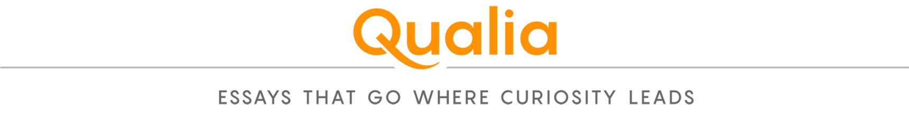

In 1993, a team led by the planetary scientist Carl Sagan tentatively concluded that there is life on Earth. Not much of a deduction, you might think — except that the researchers confined their evidence to observations made by the Galileo spacecraft, which had flown past our planet three years earlier on a looping journey to Jupiter. So great is the transformative power of life that its presence can be detected just from the light and radio waves our planet emits or reflects into space. Today we scan the cosmos for some of these telltale signatures light-years away.
Life leaves a mark, yet even now there’s no scientific consensus about what makes living things so different from inorganic substances like the rocks, gases, and oceans that are the sole components of dead worlds. Many scientists cite properties such as replication or metabolism. Others speak in more abstract terms about the way life is out of thermodynamic equilibrium with its surroundings. But some give another kind of answer. Living organisms are different because they do stuff for reasons.
In philosophy, “qualia” refers to the subjective qualities of our experience: what it’s like for Alice to see blue or for Bob to feel delighted. Qualia are “the ways things seem to us,” as the late philosopher Daniel Dennett put it. In these essays, our columnists follow their curiosity, and explore important but not necessarily answerable scientific questions.
It’s not enough to say that life is a nonequilibrium organized state through which there’s a constant flux of matter and energy. That description applies to hurricanes, too. But hurricanes just are. Only living entities have goals: to find food, to reproduce, to survive, sometimes simply to experience good things. (Dog owners will recognize that this is not just a human attribute.)
One way to express this idea is to say that living organisms have “agency.” It’s a hotly contested term. Some biologists reject it outright, at least for any organisms except humans, because we decide on our actions with conscious deliberation. (Whether we’re truly the only species to do so is another issue.) Others think that agency is a fundamental attribute of all life. Since there’s no agreed-upon definition of the term, to some extent it can mean whatever you want it to mean. But the debate about biological agency touches on fundamental issues in our understanding of what it means to be alive, because agency evokes a notion that biologists and philosophers have always wrestled with: teleology, the apparent purposiveness of life. If we admit agency into biology, do we open the floodgates to ideas about design, vitalism, or cosmic meaning? Or is it just a recognition of what makes life such a special state of matter?
To me, the notion of agency indeed speaks to our intuitive sense of what makes living things so special: not mere machines pushed around by environment and circumstance. I suspect that aversion to agency betrays a queasiness about confronting life as something more than some kind of genetic program. But there’s danger in the idea, too: It could so easily derail the work of studying the mechanistic explanations of how life works. I’m not looking to either bury or praise agency, but to explore whether it can be a scientifically productive idea.

To say that living things are goal-directed isn’t really a controversial statement. Biologists ranging from the evolutionary theorist Ernst Mayr to the pioneer of molecular biology Jacques Monod have acknowledged that. Whether it’s a bird building a nest or a white blood cell chasing a bacterium, we can’t watch life at work without supposing that these entities are trying to accomplish something.
The agency arguments are about what that means. In one view, apparent goal-directedness is just the result of genetic instructions playing themselves out. Organisms are automata directed by their genes, and natural selection favors gene variants that make the organisms behave one way and not another. In this mechanistic, gene-centered view of life, apparent agency is merely the performance of automated routines refined over many generations.
Is that really all there is to life? It’s far from clear that all organismal behavior can be attributed to particular genes. Think of a hare fleeing from a fox. Sure, its genes are involved in the formation of networks of neurons that enable behaviors that contribute to a state of not being eaten. But are genes responsible somehow for the decision to dart to the left or right, to hide or to run, or even to stand and fight? Genetics might impose behavioral biases (say, making a hare generally risk-averse), but organisms make decisions by integrating a wealth of contextual and contingent information on the fly, including learned experience. In one view, agency is neither more nor less than this ability to set proximal goals — not “Shall I reproduce some day?” but rather, “What action shall I take right now?” — and then act upon oneself and one’s environment to attain them.
“I understand agency to be the capacity of an entity to act in the world, for reasons [of its own],” said the neuroscientist Kevin Mitchell of Trinity College Dublin, whose 2023 book Free Agents: How Evolution Gave Us Free Will presented an argument for how this capacity developed through evolution. “I think all living organisms can act as causal entities,” he said — not as mere vehicles steered by genetic prompts, but as agents that can be meaningfully said to be a genuine cause of change in the world. We wouldn’t say it was your atoms that caused your coffee to get made this morning, nor was it really your genes. It was you, a decision-making agent, who made that happen.
If we admit agency into biology, do we open the floodgates to ideas about design, vitalism, or cosmic meaning? Or is it just a recognition of what makes life such a special state of matter?
Mitchell is wary of rigid definitions, however. “People often take [such definitions] as a fixed set of criteria that they then use for demarcating a phenomenon in an all-or-none fashion,” he said — either it is an agent or it isn’t. “I don’t think that’s helpful or appropriate because I don’t think agency is that kind of phenomenon. But if you approach behavior in a more holistic, systems-oriented, ecologically contextualized view, you’ll be investigating agency by default.”
Samir Okasha, a philosopher of biology at the University of Bristol, is hesitant to invoke this sort of agency. He said that it’s important to distinguish between two ideas: that organisms are real agents, or that they merely act as if they are. “Very often,” he said, “agency seems no more than a fancy synonym for phenotypic or behavioral plasticity” — the ability of organisms to show different responses to a given stimulus. “But then the claim that organisms exhibit agency is really just a gloss on something that science has always known, and doesn’t represent a deep philosophical insight.” Even the most gene-centric evolutionary biologist recognizes that many organisms can adapt their behavior to present circumstances and can often be considered to make choices. But without an ability to self-consciously reflect on the options and the likely outcomes of actions, does that rise to the level of true agency?
James DiFrisco, a philosopher of theoretical biology at the Francis Crick Institute in London, thinks not. Agency, he said, is a psychological concept traditionally used to talk about human behavior. Importing it into biology as a whole risks imputing a kind of cryptic self-awareness to all life. “Agency is a term whose meaning comes from human interpersonal discourse, which takes place in the vocabulary of intentions, beliefs, freedom, deliberation, and personhood,” he said. It’s not clear how to transfer that word to situations where those concepts simply don’t apply.
But what about the goal-directedness of organisms? This, DiFrisco said, is “something that evolved by natural selection and is therefore a state of adaptation.” In other words, organisms are adapted — genetically predisposed — to achieve things by various means, and the goal is the aspect of fitness the behavior serves. But to say that they themselves devise their goals, he said, is untestable and nonexplanatory, “unless we’re dealing with cognitive subjects that can report on their own mental states.”
In 2025, DiFrisco and his colleague Richard Gawne published a critique in the Journal of Evolutionary Biology arguing that biological agency is therefore “a concept without a research program.” Either it’s invoking something already familiar in biological science, or it’s conjuring up some almost mystical force that makes organisms do things. This force, they said, is resistant to explanation in terms of causal mechanisms: a vague kind of “holistic power” that doesn’t really explain anything, much as the 18th-century notion of a “vital force” animating living things was really just an empty explanation. Some people, DiFrisco suggested, “are playing on the ambiguity of ‘agency’ to support the idea that biology shows the need for some quasi-spiritual reality.”
The biologist Sonia Sultan of Wesleyan University, whose collaborative work on agency is among that critiqued by DiFrisco and Gawne, argues that they misunderstood what was being proposed. “There is nothing supra-materialistic or otherwise spooky in a perspective that takes into account the empirically verifiable developmental and evolutionary agency of organisms, explicitly understood as the physical outcomes of natural processes expressing neither conscious desire nor intentionality,” she said. In other words, she separates biological agency from complex psychology and believes the widespread existence of agency to be a testable hypothesis.
In 2022 Sultan, along with the biologist Armin Moczek and the philosopher Denis Walsh, argued that agency can fill in some “explanatory gaps left by prevailing gene-focused approaches in our understanding of phenotype determination, inheritance, and the origin of novel traits.” In particular, they said that it takes into account how organisms interact with their environment and demands a wider view of inheritance beyond genes. Biological agency, the researchers continued, is thus “the capacity of a [living] system to participate in its own persistence, maintenance, and function by regulating its own structures and activities in response to the conditions it encounters.”
In support of this perspective, the philosopher Álvaro Moreno of the University of the Basque Country in Spain said that organisms don’t just detect and respond to changes in their environment but “possess the capacity to modify them.” Even Charles Darwin recognized this, which is why admitting agency into the living world isn’t some kind of mystical challenge to Darwinism. The 18th-century French zoologist Jean-Baptiste Lamarck went further. He believed, in the words of the Stanford University historian Jessica Riskin, his latest biographer, that “life at its essence is creative agency” — in contrast to the view then prevailing that the only real agency in the natural world was of divine origin. While Darwin differed from Lamarck about the source of evolutionary change, both placed the ability of organisms to act for themselves at the center of their theories.
We need a proper theory of agency, of a sort that can indeed furnish some sort of research program.
These choices made by the organism can feed back into their own evolution. The decision to change diet or move to a new habitat, simply because of an impulse to explore options, can alter the selective pressures a population experiences and thus its evolutionary trajectory. Crucially, for example, no gene is telling the organism, “Go and eat that new plant.” The organism itself takes the initiative. In this sense agency is already invoked in conventional evolutionary theory: It is called “behavioral drive,” whereby new adaptive traits emerge just because a group of organisms chose to do something new. This phenomenon is akin to the so-called Baldwin effect, first identified as “a new factor in evolution” by the 19th-century psychologist Mark Baldwin, in which non-innate behavioral choices, perhaps ones that are socially learned, themselves create new selective pressures that lead to those choices becoming genetically fixed in the population. In other words, if you want to exclude agency from evolution, it’s too late.
But why do we have to call it that? The behaviors of organisms are already studied and understood from a variety of perspectives. Neuroscientists, for example, look at the decision-making circuits of brains, biophysicists look at the molecular pathways that govern the responses of bacteria to environmental signals such as nutrient concentration or heat, animal behavioralists think about cognitive mechanisms, and so on. Why complicate that research with a fancy label that just muddies the waters? “A lot of work on agency is playing on the ambiguity of the term, which is suggestive that there are higher cognitive processes than we’d expect in simple organisms,” DiFrisco said. When Sultan and colleagues say that agency — the capacity to act in a way that is conducive to an organism’s goal — can be used to predict and explain behavior, DiFrisco and Gawne charge that this makes it circular. The idea that an organism did something “because of its agency,” they argue, resists any further analysis. But Sultan and colleagues disagree with this characterization of how their notion of agency should be applied.
This aspect of the debate hinges on how we attribute the causes of actions. Is agency itself a causal factor, or is it a higher-level umbrella term for a host of specific and particular reasons that things happen? To put it another way: Agents make decisions — that’s what agency means — but do organisms? For DiFrisco, speaking of organismal decisions “is just a convenient and compact way of referring to the operation of a (multiscale) mechanism” that determines behavior — a mechanism that is perfectly capable of incorporating context and conflicting signals. But for me, the key point here is that the actions can be governed by reasons and goals. The hare is genuinely trying to escape the fox; it doesn’t merely look that way. And the hare did not have that specific goal before the fox appeared. Perhaps it had been trying to forage and to look out for predators. Such “trying to” is the fundamental nature of organisms: Evolution builds entities that try to do things.
Maybe we can focus this debate by asking what the concept of agency buys us that can’t be obtained without it. “This is a really key question,” Mitchell said. If agency is going to be more than a philosophical stance — if it’s going to be useful for doing science — then first it needs to be “naturalized,” as Mitchell and his colleague Henry Potter have put it: We need a proper theory of agency, of a sort that can indeed furnish some sort of research program.
At present, nothing like that really exists, but it’s possible to set out some of the issues it would need to confront. For example: How exactly do organisms determine their goals? How are those aims represented (if at all) in the molecular or neural mechanics of the organism? How do organisms integrate information (including information about their own internal state) to come up with a decision about how to act? Can we measure how much agency an entity has — or what kind of agency? “I think developing empirical indicators for measuring different dimensions of agency would be the primary way to go for turning agency into a scientific concept,” Potter said.
Some researchers have asserted that agents need particular kinds of internal architectures to govern the relationships between senses, cognitive processes, actions, and needs. Moreno, for example, has argued that this organization involves feedback loops that don’t just enable adaptation to the environment but let the system alter that environment — for example, simply by moving from one location to another with a different set of conditions. The theoretical biologist Stuart Kauffman has argued that properties like this depend on what he calls “organizational closure,” in which the parts are collectively self-maintaining, each of them supporting the functions of the others. This property, Kauffman says, gives the whole system “causal power” — Mitchell’s ability for an agent to act on its own behalf rather than just being a passive vehicle for lower-level causes. Meanwhile, the neuroscientist Karl Friston has argued that agency arises in entities that can make predictions about the outcomes of behaviors and then compare those with what actually transpires, and seek to minimize the disparity between the two (none of which demands an ability to reflect on that comparison with conscious self-awareness).
At this level it can all sound a bit abstract and remote from actual biology. But I’m cautiously optimistic about the prospects of uniting such theoretical ideas with biological mechanisms. It seems unlikely to be coincidental, for example, that organisms that seem to show more agency also have molecular pathways that permit more openness to the influence of context and external information.
If we can get a clearer idea of what makes an agent, this could help us to understand how collective goals arise — as they did when multicellular organisms first arose long ago — and how they can break down, as in cancer. What’s more, a proper theory of agency might give us a clearer idea of what’s needed to make genuine artificial agents, not just computers and machines programmed with our own goals, but ones that can formulate their own. We might then also get a clearer idea of the potential benefits and dangers such truly agential machines might bring. But perhaps the most compelling argument for recognizing agency is that it might help us understand what makes life so different — not just humans, but life — that it is able to shape an entire planet in a manner visible from outer space.
Källförteckning
- Originalartikel: https://www.quantamagazine.org/is-life-just-different-20260708/